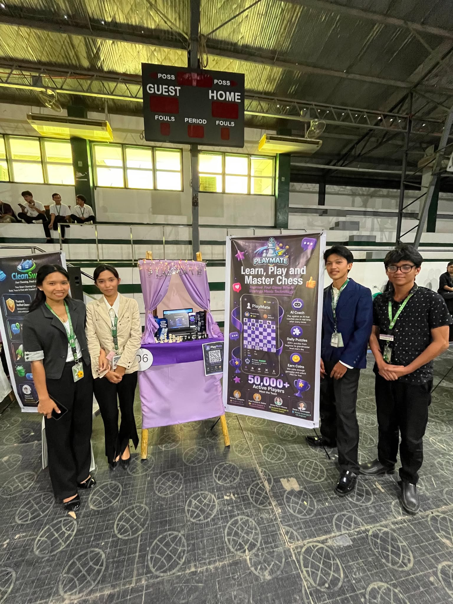
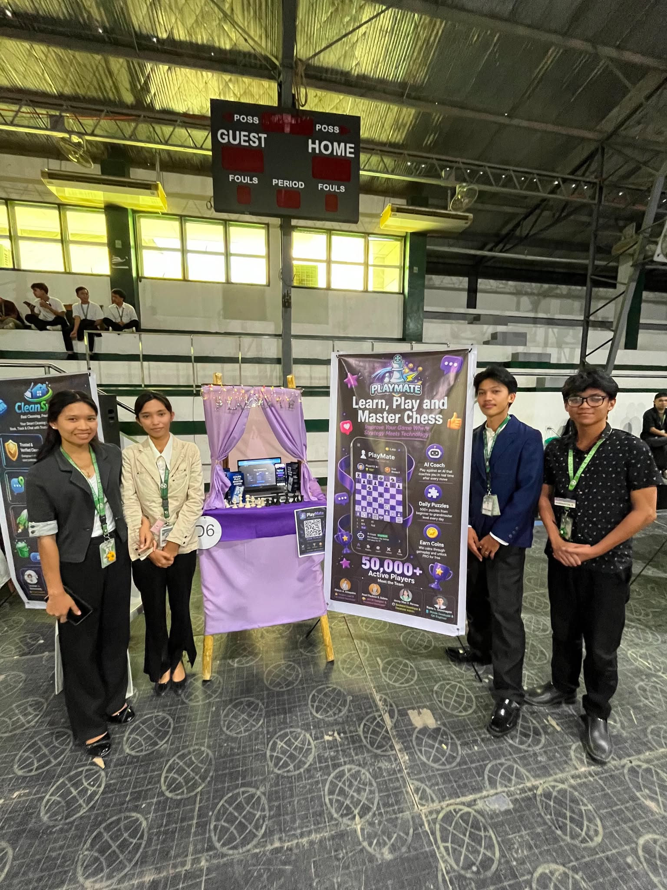
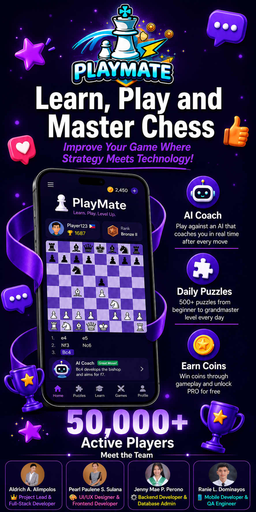
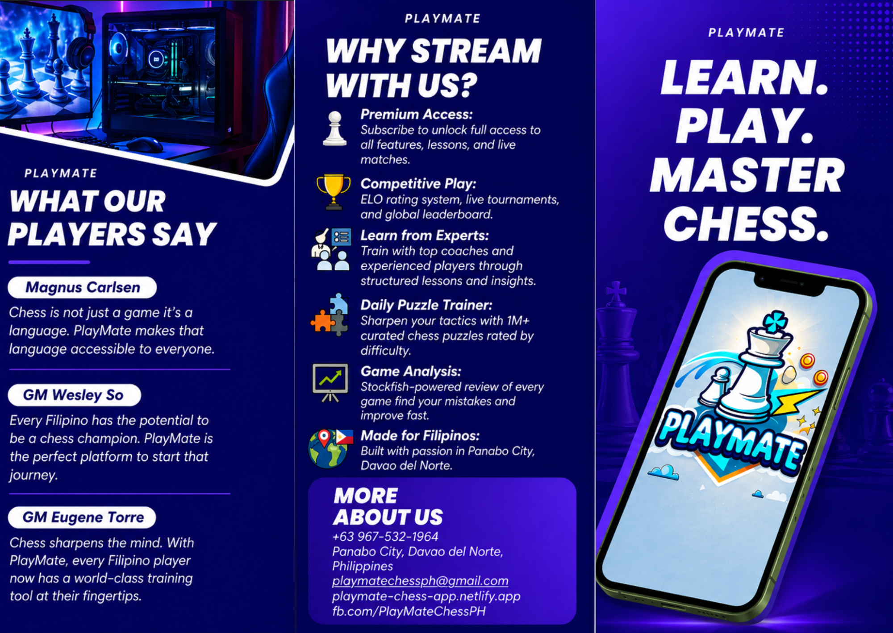
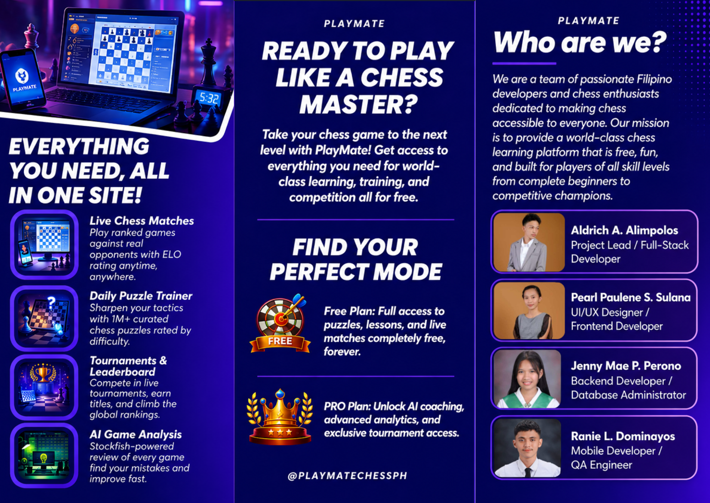

Chess experience
An application project centered on chess.
PROJECT / 03 HCI & TECHNOPRENEURSHIP
A thoughtful move. A playful experience.
An academic chess application project accompanied by interface design, promotional materials, and a public website. Explore the live experience and selected project visuals below.
I contributed as a developer on this collaborative project.
An application project centered on chess.
Academic work exploring user interfaces and interaction.
Brochures and poster materials introducing the project.
A publicly accessible PlayMate website hosted on Netlify.
03 / A CLOSER LOOK
Selected project visuals.
Open any image to see it in full.





YOUR NEXT MOVE